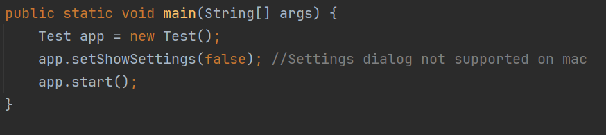
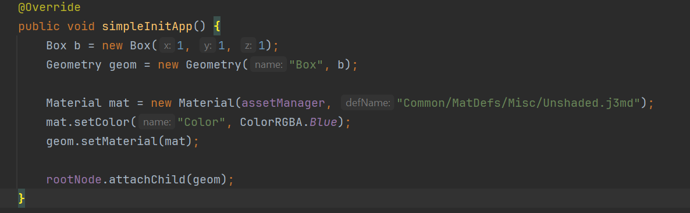
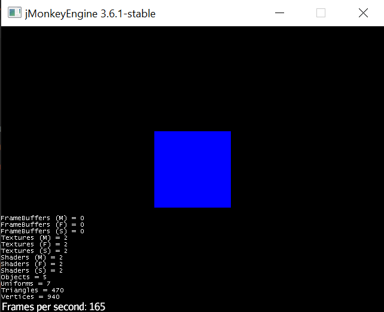
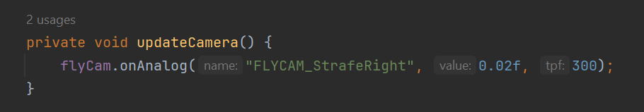
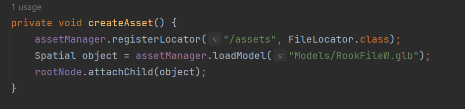
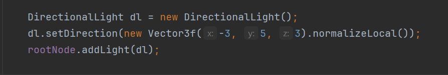
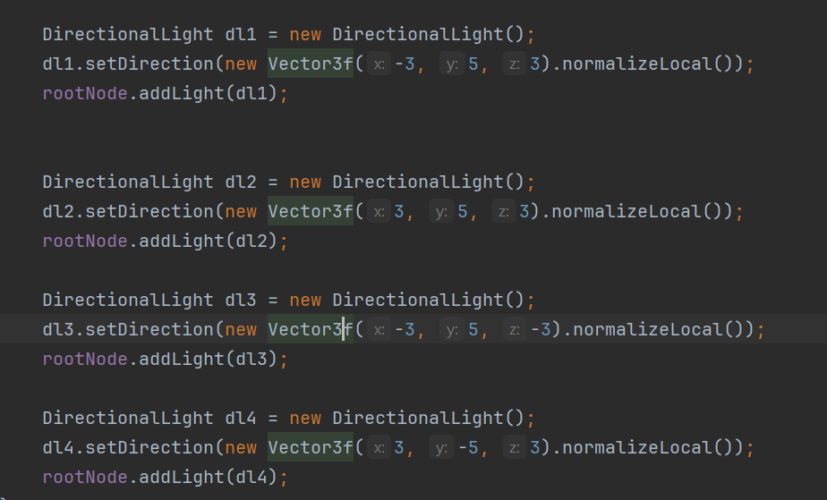

JMonkeyEngine is a modern game engine written primarily written in Java. This is a very useful library with a very "code first" approach.
In this tutorial, I will primarily be working within Intellij to showcase how this engine isn't tied to any SDK or IDE.
However, the online documentation is rather sloppy for nieche problems or describing the functionality of a certain class.
They have a rather mediocre sdk they have programmed with this game engine in mind with further documentation found within the inside code.
That can be found here. Otherwise, you can find more information about JMonkeyEngine and start a project here.
Press this button on the website to start a project.
Input the information for the project and press download a starter project. It is going to download a .zip file with a Java Project inside.
This tutorial will not be a tutorial about anything specific, rather I will just demonstrate how to use the most critical parts of the engine.
I will inevitably use assets from my 3d chess project, which were made in a 3d modeler such as Blender, but this will not be a tutorial for 3d modeling yet.
Getting Started
First Running Project
Now that you have a starter project, you can open and run the project.
The directory is
-PROJECT_NAME-/src/main/java/-PACKAGE_NAME-/-PROJECT_NAME-
If you run the program just as it is, you should get a window that looks like this
That blue box is the one created by the initial simpleInitApp()
The controls to use the camera are:
WASD to move
Q and Z to do up and down the Y-Axis
the mouse to look around
and ESC to close the program.
Overriden Methods
Going back to the code, there are a few things of note.
The Main method contains 3 lines of important code.
Test app = new Test(); creates an instance of this class since Main() is static.
app.showSettings(false); set this to true and see the settings.
app.start(); starts the application.

If you'll notice, there is also one other method with a body. The simpleInitApp() method is an overrided method from the parent class, SimpleApplication.
It runs as soon as the app is ran inside the Main Method.
Box b = new Box(1,1,1); is creating a Box Shape, passing the dimensions through the constructor.
Geometry geom = new Geometry("Box", b); is creating a Geometry for the RootNode, passing through a String name of the shape and the variable we created previous, b.
Material mat = new Material(assetManager, "Common/MatDefs/Misc/Unshaded.j3md"); is defining the material, which is what the user actually sees, is defined using the assetManager, which is a variable inside our SimpleApplication and with the path of a unshaded texture.
mat.setColor("Color", ColorRGBA.Blue); is just setting the color of the material.
geom.setMaterial(mat); is setting the material of the geometry to the material we defined up above, mat.
rootNode.attachChild(geom); is attaching the geometry to the rootNode, a variable inside SimpleApplication

The other two methods are part of the abstract methods, but will not be touched on right now.
SimpleApplication
Understanding the Simple Application
To truly learn how to operate the concrete class, it is important to delve into the abstract class to learn how what you can use from the parent.
If you press Shift and click on SimpleApplication, it will bring you into the class.
The first thing I would like to point out is at the bottom is the methods you inherit in your Main class.
Another thing that would help in learning this library is to become familiar with what getters and setters are available to you.
The next thing that I would like to point out is the constructor of the class. By default, it makes new instances of:
StatsAppState
FlyCamAppState
AudioListenerState
DebugKeysAppState
ConstantVerifierState
This tutorial will be utilizing various methods/variables from these, but it isn't fully necessary to delve into the classes individually.
Just know they exist and when they get referenced in here, I will explain how it works.
Inilitialize
I am seperating this into it's own section purely because it is a big method and most of it is pretty important to understand as well.
For the most part, this method is to create different variable and assign them.
The first notable part is assigning a flyCam, then assigns the state in the stateManager.
The next part adds the mapping to have ESC key close the program and F5 to Hide/Show the stats on the window.
After that, it calls the simpleInitApp().
Meaning that as soon as the Main method is called, you need to have the first line make a new instance of the concrete class.
As soon as the Main class runs, your SimpleInitApp() code will run before anything else in the Main method.
This can be used to do things prior to when the user can see the pop-up window, but it also needs to be used precisely to avoid bugs.
FlyByCamera
Using the FlyByCamera
The flyCam variable is a public variable given to us through the parent class. This is the camera that the player can control.
To disable the camera, and disable the player being able to move it, you can use flyCam.setEnabled(false);

While it may look the same, the user cannot interact with the camera.
Moving The Camera
Because of how they have the encapsulation, we must interact with the position of the camera using flyCam.onAnalog();
This method takes in 3 parameters:
String: Name
int: length
int: duration
The name parameter has a certain convention that they use. If you Shift + Click on the onAnalog() method, you can find the String Variables.
To find the string representation, you can Shift + Click on the CameraInput class to look at all of them.
Meaning that if I were to write the line flyCam.onAnalog("FLYCAM_StrafeRight", 2, 200); I would get something that looks like this:
Having fun with simpleUpdate()
One of the defaulted methods within the Main class is the simpleUpdate(float tpf) method.
The one parameter stands for Time Per Frame, which is the Δ (Delta) of time between each Frame.
We can utilize this part of the code to make it so that we move the camera every frame, effectively making an "Animation".
I would personally seperate the function call into a method, so that we can single out all camera movement into one method.
Also, I would recommend that you make the length of the camera movement WAY shorter so you can actually witness the animation.

Creating Models
Adding Custom Assets
When I used this engine, It was to create a 3d chess game. So we needed to actually insert the assets into the engine.
To do this, we are going to need a .glb file type. In blender, you can export it to such a file. WARNING: This is not a tutorial on how to make a custom asset!
Drag and drop the file into the file for assets. The directory for the file should be './resources/Models', just to keep conventions.
By default, JMonkeyEngine has an Empty file in every directory it creates in the resources folder. You can delete it to clean up the directory.
It should look something like this.
Now that we have the Model in the file directory, we can access the model and use it.
To access the file, we are going to use the assetManager & FileLocator import class from JMonkeyEngine.
This will help us to be able to access the files.
We need to call the assetManager class built into the SimpleApplication class and use the .registerLocator("/Assets", FileLocator.Class) method.
It has two parameters, the first string is to tell the SimpleApplication from which to locate assets for the given AssetLocator.
The second parameter is the class type of AssetLocator to use. Primarily you will just use the Parent FileLocator class, but there are use cases where subclasses can be useful!
Now we are going to use the .loadModel(-File Directory-) method and store it as a Spatial variable.
Finally we can load the model using rootNode.attachChild(object);

Now if you were to run the method, you would see something like this:
Adding Lighting
As you can see, even though the asset is being created in the world, we cannot see it.
This is because loading assets use a lighting system to represent lighting
For this, we are going to use the DirectionalLight class. Just know that you can also use any subclass of the abstract Light class.
This class is rather simple to implement. First create an instance of the DirectionalLight
Then we need to assign the direction of the light with .setDirection(Vector3f) method.
If you don't understand Vectors, just think of them as arrows pointing from a point outwards.
Since we are working in 3d, we need to give it an x, y, & z position
Normally we just declare a new instance of the Vector3f class anytime we need to use one.
So inside of the setDirection() method, we need to put new Vector3f(-3, 5, 3).normalizelocal()
Now I am not going to get into normalizing a vector, but it is just some math to make sure our vectors are correctly project our light.
Now all we need to do is add the light to the rootNode with rootNode.addLight(dl)

If we were to run this, it will look like this:
Obviously this is not the intended outcome, but here comes the trouble of using DirectionalLight.
Since this is just shining light from a given point, it doesn't shine on all sides of the piece.
To fix this, we are going to use multiple DirectionalLight to project from all angles.
I have tried multiple variations of DirectionalLight placements, but for my project I found it best to have 3 DirectionalLights above the scene and 1 DirectionalLight below the scene.
This gets into the setup of your project, and how you want the shadows to appear. I encourage finding different positions to find the best lighting for your project.
My snippit of code like this:

If you were to run it, it should look something like this:
One reason I like DirectionalLight is that since you have 4 different light sources, you can use one of them to change the light properties.
I added this snippit of code to the simpleUpdate method so we can see a simple animation of the light source.
we can also change the color of the first DirectionalLight to red using the .setColor(ColorRGBA.Red); method so that we can actually see the animation.
The animation should look something like this:
Take a moment after the animation to look at how the colored light changes the asset. Now you can see the creativity of having DirectionalLight!
It may not be the right choice for your project, so I would encourage you also look into which subclass of Light to see which one suits your needs.
Test
 Press this button on the website to start a project.
Input the information for the project and press download a starter project. It is going to download a .zip file with a Java Project inside.
Press this button on the website to start a project.
Input the information for the project and press download a starter project. It is going to download a .zip file with a Java Project inside.


.png)